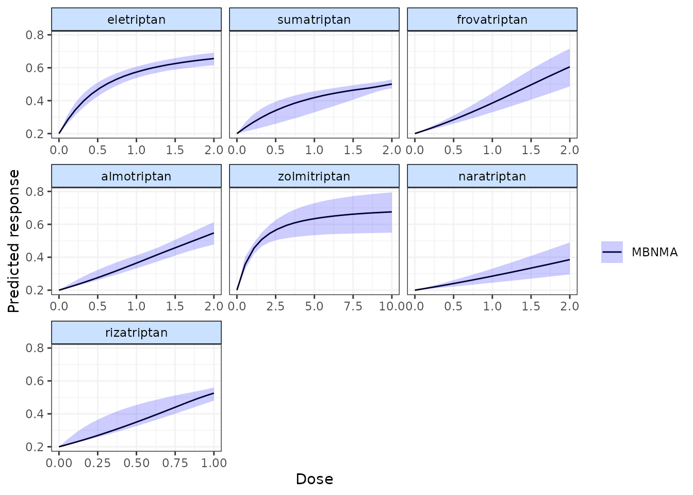
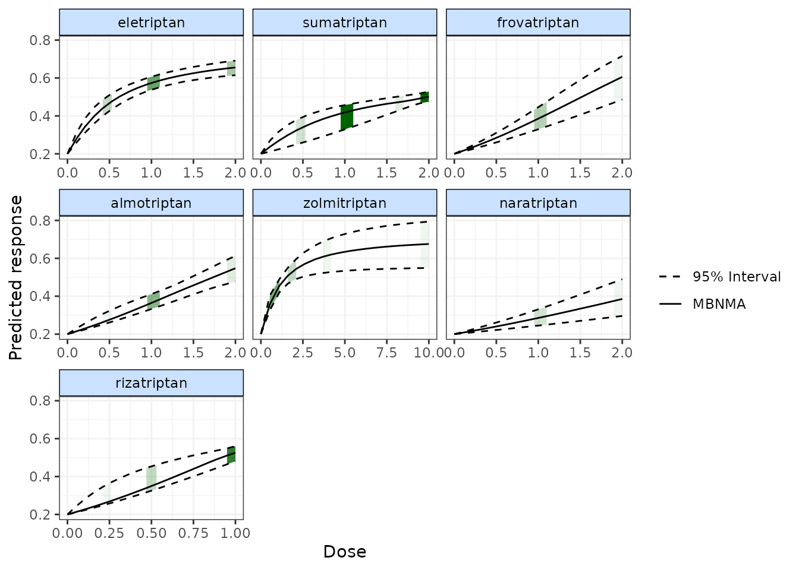
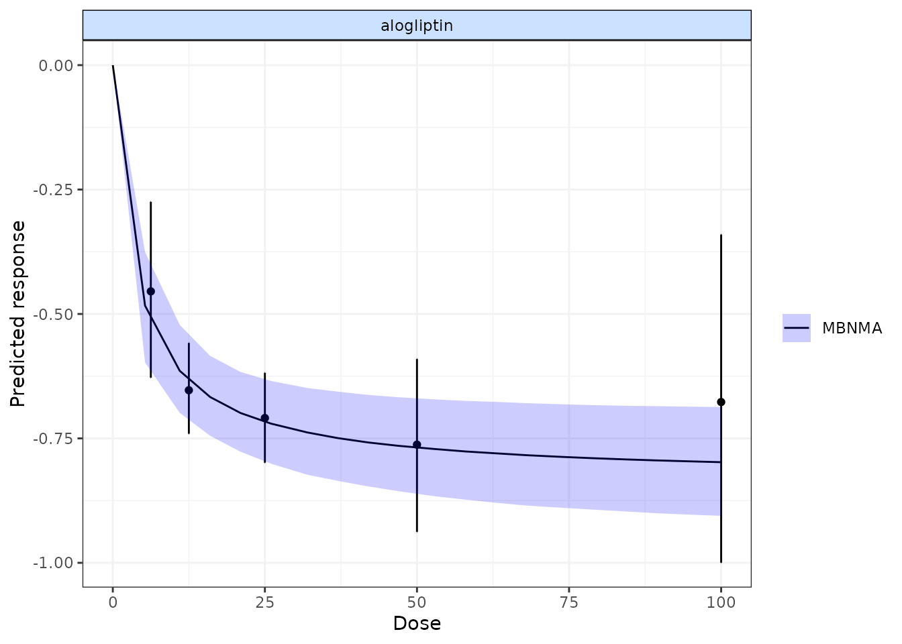

predictions-5.RmdFor calculating predictions from MBNMAdose we will demonstrate using results from an Emax MBNMA on the triptans dataset:
tripnet <- mbnma.network(triptans)
#> Values for `agent` with dose = 0 have been recoded to `Placebo`
#> agent is being recoded to enforce sequential numbering
trip.emax <- mbnma.run(tripnet, fun = demax(emax = "rel", ed50 = "rel"))
#> `likelihood` not given by user - set to `binomial` based on data provided
#> `link` not given by user - set to `logit` based on assigned value for `likelihood`
#> module glm loadedAfter performing an MBNMA, responses can be predicted from the model
parameter estimates using predict() on an
"mbnma" object. A number of important arguments should be
specified for prediction. See ?predict.mbnma for detailed
specification of these arguments.
E0 This is the response at dose = 0 (equivalent to the
placebo response). Since relative effects are the parameters estimated
in MBNMA, the placebo response is not explicitly modelled and therefore
must be provided by the user in some way. The simplest approach is to
provide either a single numeric value for E0 (deterministic
approach), or a string representing a distribution for E0
that can take any Random Number Generator (RNG) distribution for which a
function exists in R (stochastic approach). Values should be given on
the natural scale. For example for a binomial outcome:
E0 <- 0.2
E0 <- "rbeta(n, shape1=2, shape2=10)"
Another approach is to estimate E0 from a set of
studies. These would ideally be studies of untreated/placebo-treated
patients that closely resemble the population for which predictions are
desired, and the studies may be observational. However, synthesising
results from the placebo arms of trials in the original network is also
possible. For this, E0 is assigned a data frame of studies
in the long format (one row per study arm) with the variables
studyID, and a selection of y,
se, r, n and E
(depending on the likelihood used in the MBNMA model).
synth can be set to "fixed" or
"random" to indicate whether this synthesis should be fixed
or random effects.
E0 <- triptans[triptans$dose == 0, ]Additionally, it’s also necessary to specify the doses at which to
predict responses. By default, predict() uses the maximum
dose within the dataset for each agent, and predicts doses at a series
of cut points. The number of cut points can be specified using
n.doses, and the maximum dose to use for prediction for
each agent can also be specified using max.doses (a named
list of numeric values where element names correspond to agent
names).
An alternative approach is to predict responses at specific doses for
specific agents using the argument exact.doses. As with
max.doses, this is a named list in which element names
correspond to agent names, but each element is a numeric vector in which
each value within the vector is a dose at which to predict a response
for the given agent.
# Predict 20 doses for each agent, with a stochastic distribution for E0
doses <- list(Placebo = 0, eletriptan = 3, sumatriptan = 3, almotriptan = 3, zolmitriptan = 3,
naratriptan = 3, rizatriptan = 3)
pred <- predict(trip.emax, E0 = "rbeta(n, shape1=2, shape2=10)", max.doses = doses,
n.dose = 20)
# Predict exact doses for two agents, and estimate E0 from the data
E0.data <- triptans[triptans$dose == 0, ]
doses <- list(eletriptan = c(0, 1, 3), sumatriptan = c(0, 3))
pred <- predict(trip.emax, E0 = E0.data, exact.doses = doses)
#> Values for `agent` with dose = 0 have been recoded to `Placebo`
#> agent is being recoded to enforce sequential numberingAn object of class "mbnma.predict" is returned, which is
a list of summary tables and MCMC prediction matrices for each treatment
(combination of dose and agent). The summary() method can
be used to print mean posterior predictions at each time point for each
treatment.
summary(pred)
#> agent dose mean sd 2.5% 25% 50%
#> 1 Placebo 0 0.1238618 0.003299088 0.1172937 0.1216394 0.1238299
#> 2 eletriptan 0 0.1238618 0.003299088 0.1172937 0.1216394 0.1238299
#> 3 eletriptan 1 0.4319589 0.018709020 0.3944974 0.4196697 0.4319110
#> 4 eletriptan 3 0.5553297 0.027663287 0.5007535 0.5363114 0.5555447
#> 5 sumatriptan 0 0.1238618 0.003299088 0.1172937 0.1216394 0.1238299
#> 6 sumatriptan 3 0.4390143 0.070384314 0.3553241 0.3840562 0.4043520
#> 75% 97.5%
#> 1 0.1260763 0.1302943
#> 2 0.1260763 0.1302943
#> 3 0.4445959 0.4684752
#> 4 0.5747681 0.6063888
#> 5 0.1260763 0.1302943
#> 6 0.5202068 0.5623256Predictions can also be plotted using the plot() method
on an object of class("mbnma.predict"). The predicted
responses are joined by a line to form the dose-response curve for each
agent predicted, with 95% credible intervals (CrI). Therefore, when
plotting the response it is important to predict a sufficient number of
doses (using n.doses) to get a smooth curve.
# Predict responses using default doses up to the maximum of each agent in the
# dataset
pred <- predict(trip.emax, E0 = 0.2, n.dose = 20)
plot(pred)
Shaded counts of the number of studies in the original dataset that
investigate each dose of an agent can be plotted over the 95% CrI for
each treatment by setting disp.obs = TRUE, though this
requires that the original "mbnma.network" object used to
estimate the MBNMA be provided via network.
plot(pred, disp.obs = TRUE)
#> 66 placebo arms in the dataset are not shown within the plots
#> Warning: No shared levels found between `names(values)` of the manual scale and the
#> data's fill values.
This can be used to identify any extrapolation/interpretation of the dose-response that might be occurring for a particular agent. As you can see, more observations typically leads to tighter 95% CrI for the predicted response at a particular point along the dose-response curve.
We can also plot the results of a “split” Network Meta-Analysis (NMA)
in which all doses of an agent are assumed to be independent. As with
disp.obs we also need to provide the original
mbnma.network object to be able to estimate this, and we
can also specify if we want to perform a common or random effects NMA
using method. Treatments that are only connected to the
network via the dose-response relationship (rather than by a direct
head-to-head comparison) will not be included.
alognet <- mbnma.network(alog_pcfb)
alog.emax <- mbnma.run(alognet, fun = demax(), method = "random")
pred <- predict(alog.emax, E0 = 0, n.dose = 20)
plot(pred, overlay.split = TRUE, method = "random")
By plotting these, as well as observing how responses can be extrapolated/interpolated, we can also see which doses are likely to be providing most information to the dose-response relationship. The tighter 95% CrI on the predicted responses from the MBNMA also show that modelling the dose-response function also gives some additional precision even at doses for which there is information available.
More detailed documentation can be accessed using
?plot.mbnma.predict.
Predicted responses from an object of
class("mbnma.predict") can also be ranked using the
rank() method. As when applied to an object of
class("mbnma"), this method will rank parameters (in this
case predictions) in order from either highest to lowest
(direction=1) or lowest to highest
(direction=-1), and return an object of
class("mbnma.rank").
If there have been predictions at dose = 0 for several agents only one of these will be included in the rankings, in order to avoid duplication (since the predicted response at dose = 0 is the same for all agents).